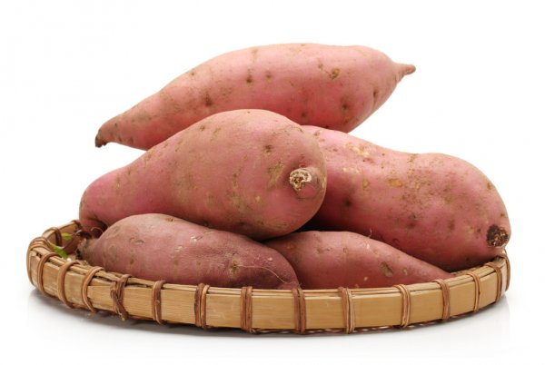
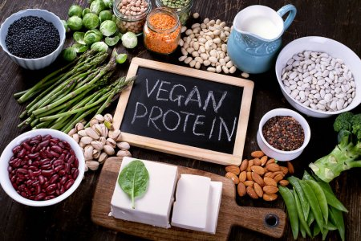
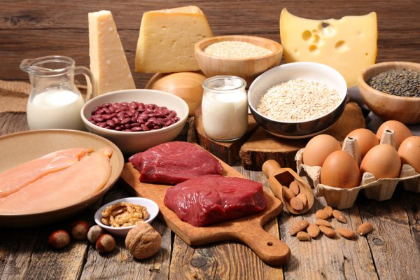

Atualmente, os problemas de saúde relacionados à má alimentação têm crescido assustadoramente. Milhares de pessoas hoje em dia se alimentam mal e não sabem o que constitui uma dieta balanceada, com todos os nutrientes necessários. Dessa forma, a obesidade tem se tornado uma doença cada vez mais comum, assim como a anorexia e bulimia.
Em termos gerais, uma dieta adequada deve satisfazer três necessidades nutricionais: energia química para os processos celulares, constituintes estruturais orgânicos para as macromoléculas e nutrientes essenciais. As atividades de células, tecidos, órgãos e dos animais dependem das fontes de energia química na dieta. Nosso corpo também deve produzir nossas macromoléculas, como nossos DNA's, enzimas e proteínas. E para que tudo isso ocorra, é necessário que em nossa dieta estejam presentes todos nossos nutrientes essenciais, os carboidratos, as proteínas, os lipídeos (macronutrientes, que precissam ser digeridos para depois serem absorvidos) e as vitaminas e sais minerais (micronutrientes, que não precisam de ser digeridos para que sejam absorvidos).
São macronutrientes que ao serem digeridos no sistema digestório são quebrados em partes menores, chamadas de glicose (C6H12O6). A glicose é nescessária no processo de respiração celular. Ela é o melhor combustível do corpo para que ocorra o processo de produção de energia.
Monossacarídeos: menores unidades dos carboidratos. Exemplos: glicose (presente em em pães, massas, bolos, etc.), galactose (é o açúcar do leite animal) e frutose (açúcar presente nas frutas).
Dissacarídeos: se formam quando há a interação entre dois monossacarídeos. Exemplos: sacarose (glicose+frutose, encontrado nas frutas), maltose (glicose+glicose, encontrado no amido) e lactose (glicose+galactose, presente nos leites de origem animal).
Polissacarídeos: polímeros (várias partes) de centenas de milhares de monossacarídeos. Exemplos: amido (reserva de carboidratos das plantas), glicogênio (reserva de carboidratos dos animais) e celulose (componente da parede celular das plantas).
Os carboidratos podem ser classificados em simples e complexos. Os carboidratos simples são facilmente absorvidos pelo nosso corpo, enquanto os complexos apresentam um processo de absorção mais demorado. Dessa forma, por terem uma digestão mais lenta no organismo, recomenda-se que demos preferência aos carboidratos complexos, uma vez que geram uma sensação de saciedade por mais tempo.
Os carboidratos são encontrados em todo alimento de origem vegetal. Isso se deve ao fato de que as plantas os produzem no processo de fotossíntese e armazenam carboidrato como fonte de energia. Alguns alimentos apresentam uma concentração maior de carboidratos quando comparados a outros. Entre os alimentos ricos em carboidratos podemos citar o milho, arroz, mandioca, batata e inhame. Não podemos nos esquecer também dos pães, massas e doces. Vale salientar que alimentos derivados do leite também apresentam carboidratos, bem como o mel.
É recomendado que 40 a 60% da nossa dieta seja composta por carboidratos, e que sejam de preferência carboidratos complexos, como leguminosas, raizes e vegetais em um geral. É não só recomendado, mas também importante ter em mente que devemos tentar evitar a ingestão de alimentos processados, já que eles costumam conter quantidades muito maiores de açúcares e costumam ser pobres nutricionalmentes.
As proteínas, ao serem digeridas no sistema digestório, são quebradas em aminoácidos. Existem 20 tipos de aminoácidos na natureza. 12 deles (aminoácidos naturais) nosso corpo consegue sintetizar e os 8 restantes (aminoácidos essenciais) não. Dessa forma, eles devem ser obtidos por meio da alimentação.
As proteínas de origem animal como as carnes, ovos e queijos são completas, ou seja, elas fornecem todos aminoácidos essenciais em proporções adequadas. Por outro lado, a maioria das proteínas vegetais é "incompleta", sendo deficiente em um ou mais aminoácidos essenciais. Contudo, por meio de uma dieta variada, os vegetarianos conseguem facilmente obter todos os aminoácidos essenciais. O mais conhecido exemplo de como os grãos se combinam entre os brasileiros é o arroz e o feijão. Os aminoácidos que não estão presentes em um dos grãos é o que está presente em boas quantidades no outro. Ao comer um prato de arroz com feijão, o brasileiro está tendo uma fonte de proteína completa.
Essa macromolécula é super necessária na dieta dos seres vivos, uma vez que todas as células utilizam proteínas em seus metabolismos. Sem contar também que a proteína garante saciedade e constrói nossos músculos. Outras substâncias sintetisadazadas por proteínas: hormônios, enzimas, células do sistema imunológico, fios de cabelo, unhas, hemoglobina (proteína que transporta os gases da respiração dentro das hemáceas, ou glóbulos vermelhos), dentre muitas outras.
 Os lipídeos são de extrema importância e devem estar presentes em nossas alimentações em quantidades adequadas. Além de também darem a sensação de saciedade, os lipídeos constroem estruturas de extrema importância nos nossos organismos. A membrana celular, por exemplo, é constituída por duas camadas de fosfolipídeos (lipídeo+fosfato) que garantem a permeabilidade seletiva da membrana. Além dos fosfolipídeos, as gorduras são essenciais para que produçamos em quantidades adequadas o colesterol.
O colesterol é uma substância que além de também constituir a membrana das células e ajudar a garantir sua fluidez necessária, ele é precursor (é necessário para que haja a produção) de hormônios sexuais e da vitamina D. O colesterol é transportado pelo nosso corpo pelas lipoproteínas, as quais se dividem entre HDL (do inglês, lipoproteína de alta densidade) e LDL (do inglês lipoproteína de baixa densidade). Essas estruturas fazem o transporte do colesterol pelo corpo, e também são feitas a partir dos lipídios. Enquanto o LDL transporta o colesterol para as demais células do corpo, o HDL transporta o colesterol que por ventura esteja em excesso no nosso corpo e o conduz até o fígado, onde ele é metabolizado. Por isso que o HDL é considerado como uma lipoproteína "boa", já que ele retira o excesso de colesterol da corrente sanguínea, que, em excesso, pode provocar muitos malefícios à saúde.
As gorduras ainda podem ser divididas entre dois tipos: as saturadas e as insaturadas. As gorduras saturadas costumam ser de origem animal e em temperatura ambiente tendem a serem sólidas, como a manteiga, banha de porco e a gordura de coco (muito comumente chamada de óleo de coco). Já as insaturadas costumam ser de origem vegetal e líquidas à temperatura ambiente, como os óleos vegetais, azeite de oliva e oléo de fígado de bacalhau. Ainda existem também as gorduras trans, as quais são uma tentativa de transformar gorduras insaturadas em saturadas para que se solidificassem mais facilmente à temperatura ambiente.
O que garante esse caráter físico às gorduras são as formas de suas moléculas. As moléculas das gorduras saturadas se compactam mais facilmente, e por isso são sólidas na temperatura ambiente, diferentemente das insaturadas. Por isso que pessoas que possuem uma alimentação com mais gorduras que o ideal, em especial as saturadas, tendem a terem problemas cardíacos, uma vez que essas gorduras tendem a se compactarem nos vasos sanguíneos, obstruindo-os assim, o que pode levar a formação de ateromos (depósitos de gordura nas paredes dos vasos), AVC, pressão alta e até mesmo infarto.
Ao consumirmos gorduras, devemos dar preferência àquelas pouco refinadas (modificadas) como as oleaginosas (castanhas), azeite de oliva extra virgem e óleos vegetais, evitando as gorduras, quando possível, ainda mais as gorduras trans, que costumam estar presentes em alimentos processados.
As vitaminas são moléculas orgânicas e necessárias na dieta em quantidades muito pequenas, variando de 0,01 a 100 mg por dia. Elas têm funções diversas e são coenzimas, ou seja, são ativadoras das enzimas do nosso corpo, acelarndo as reações do organismo. Elas podem ser divididas em dois grupos, lipossolúveis e hidrossolúveis.
As vitaminas lipossolúveis são as vitaminas K, que é importante na atividade de coagulação sanguínea, A, que é incorporada aos pigmentos visuais do olho, D, que auxilia na absorção de cálcio e na formação dos ossos e a vitamina E, que tem função antioxidante e ajuda a evitar danos às membranas celulares. As fontes de vitamina K são hortaliças verdes, chás e também são produzidas por algumas bactérias do nosso corpo. As fontes de vitamina A são hortaliças verdes escuras e alaranjadas além dos derivados do leite. Sintetizamos vitamina D ao expormos nossa pele ao sol e a vitamina E pode ser encontrada em óleos vegetais, nozes e sementes. O execsso dessas vitaminas são depositados na gordura do corpo, de modo que o consumo exagerado delas pode provocar o acúmulo em níveis tóxicos.
Já as vitaminas hidrossolúveis são as vitaminas B e C. As vitaminas do complexo B estão relacionadas com os processos de respiração celular, e a falta delas pode levar à ocorrência de doenças como a Beribéri, e é encontrada em carnes, de porco, principalmente, em cereais integrais e em legumes. Já a vitamina C é usada na síntese de colágeno e é antioxidante. Podemos enconytrá-la em frutas cítricas, em tomates e em brócolis. O excesso dessas vitaminas é provavelmente inofensivo, uma vez que por serem hidrossolúveis, ele é excretado pela urina.
Os minerais presentes na dieta são micronutrientes inorgânicos e são geralmente necessários em quantidades pequenas, de menos de 1 mg até cerca de 2.500 mg por dia. Eles possuem funções diversas nos nossos organismos. Alguns estão ligados à proteínas, como o ferro, que forma a hemoglobina. O cálcio e o fósforo são importantes para a formação e manutenção dos ossos por exemplo.
Por outro lado, o excesso desses micronutrientes também pode ser maléfico, por exemplo, se uma pessoa possui uma dieta com alta ingestão de sódio, ela aumenta suas chances de ter pressão alta. Os alimentos industrializados costumam possuir muito sódio, mesmo não tendo gosto salgado, então é bom evitar esses alimentos.
Atualmente, estamos cada vez mais comprando comidas industrializadas e optando por comer fora de casa. Como dito anteriormente, esses tipos de alimento constantemente não são os mais adequados para nossa saúde, já que podem ser pobres nutricionalmente, ou muito ricos em açúcares, ou em gorduras, ou em sódio por exemplo. Porém, cada vez mais, o mercado está oferecendo opções mais saudáveis de refeições. Assim, é importante que saibamos ler os rótulos que ficam nas embalagens dos alimentos que compramos para sabermos o que estamos ingerindo.
Percebemos que na imagem do lado existe o nome em inglês "Energy kcal, que em português traduzimos para "Energia em kcal". Kcal significa "quilocalorias", que é uma unidade de medição do quanto de energia há em uma alimento (uma pessoa na média consome 2.000 kcal por dia, mas esses valores variam muito de acordo com o peso, altura e idade das pessoas. Você pode calcular seu gasto calórico diário aproximado na internet caso tenha imteresse). Esse valor no rótulo corresponde então a qunatas calorias existem nos alimentos. Alimentos com mais teores de gorduras tendem a ter maior valor calórico, uma vez que 1 g de gordura possui 9 kcal, enquantp 1 g de carboidrato e de proteína possuem apenas 4 kcal.
Abaixo de "Energy kcal" existe "Potein", proteína, onde indica quantos gramas de proteína possui esse alimento. E, abaixo de "Protein", existe "Carbohydrate", onde indica quantos gramas de carboidrato possui o alimento. É importante ficar atento nessa parte do rótulo, já que os alimentos industrializados costumam ter altos níveis de carboidrato. Assim como há nesse rótulo, os demais rótulos costumam ter uma subdivisão na linha dos carboidratos, onde especifica-se um pouco mais sobre os tipos de açúcar que existem no produto. Em seguida, temos "Fat", onde estão contidas as quantidades de gorduras existentes no produto. Nessa parte também há uma subdivisão, onde são apresentadas as quantidades de gorduras saturadas, insaturadas e trans. Esse rótulo apresenta também "Fiber", que significa fibra. As fibras são muito importantes de serem inseridas na alimentação, uma vez que promovem o bom funcionamento do intestino. E por último, mas não menos importante, temos "Salt" e "sodium", onde está indicada a quantidade de sódio que possui o produto. Lembre-se de ficar atento nos valores de sódio dos produtos industrializados, já que eles costumam passar dos valores recomendados pela OMS (Organização Mundial da Saúde), que estão em torno de 2 g.
Pode parecer que são muitas informações, mas o verdadeiro conteúdo que deseja-se passar é que o segredo da boa alimentação é evitar o exagero e buscar o equilíbrio além de sempre dar preferência para os alimentos integrais, como legumes, frutas, cereais, carnes mais magras e óleos pouco refinados. A alimentação está cada vez mais sendo relacionada com a manutenção do bom funcionamento do organismo. Nenhum cientista conseguiu estipular qual é a melhor dieta para os seres humanos, mas é necessário ter em mente que cada indivíduo possui suas prórpias necessidades, que devem ser levadas em consideração na escolha de suas dietas.
Entretanto, alguns modelos alimentícios foram criados com o objetivo de guiar as pessoas e darem noções de como devem ser suas alimentações diárias ou refeições, como a pirâmide alimentar, que indica, a partir da base, quais são os alimentos que devemos ingerir mais diariamente.